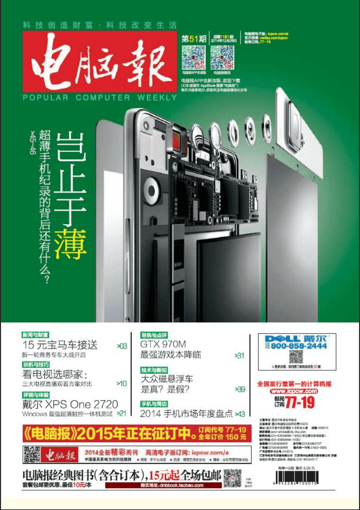
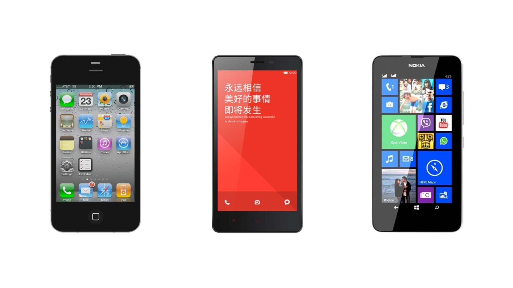
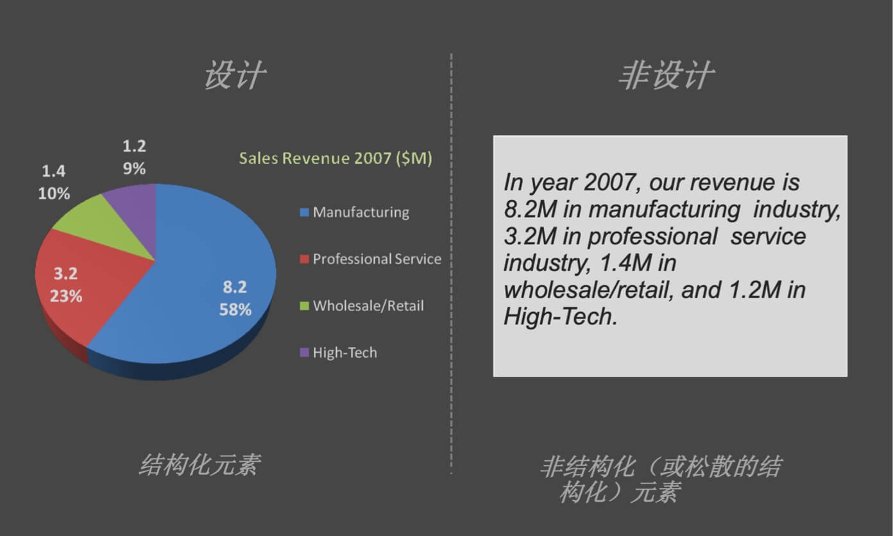
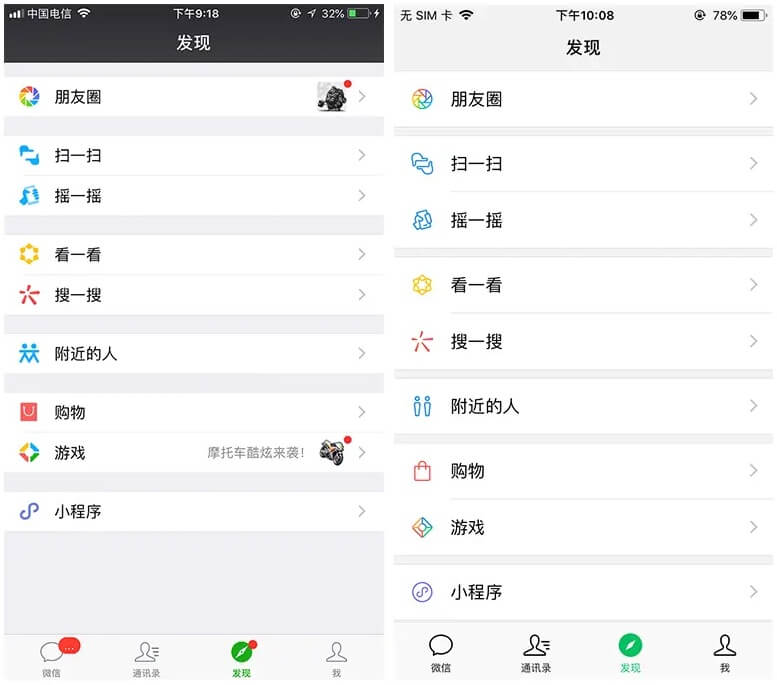
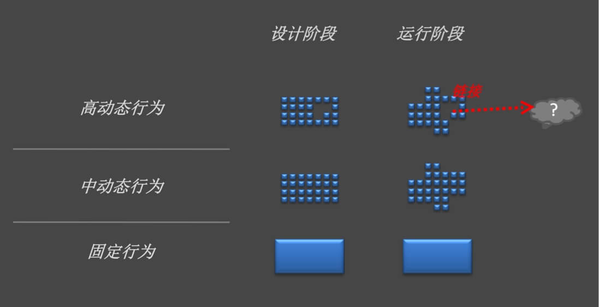
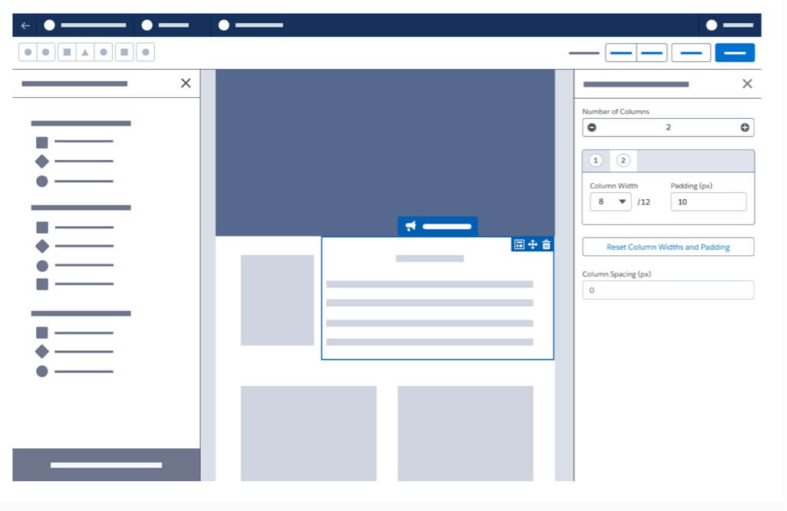
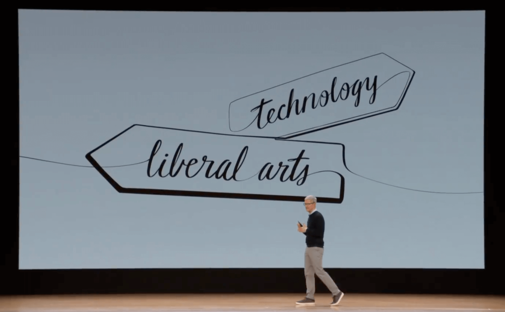
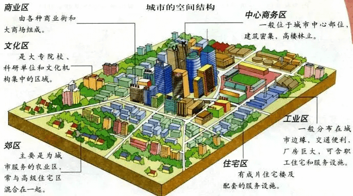
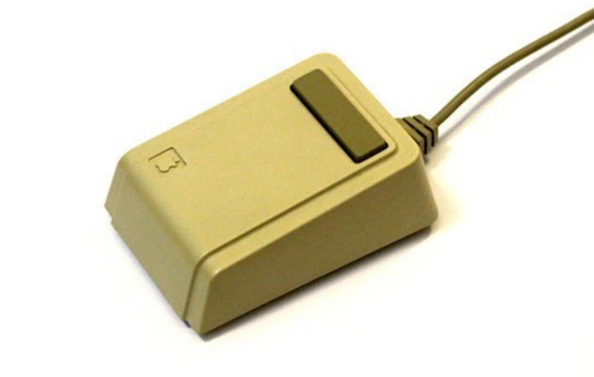
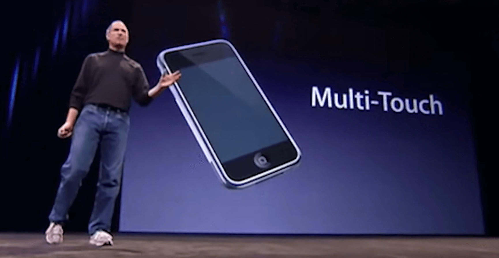

最初认知：参数决定了一切
高中时有个爱好，下课时喜欢跑到书店那去看一本叫做电脑报的杂志，那时候似乎记得每一款新手机的参数，这是我对于科技产品的最初认知：参数决定了一切；
而我对优秀系统的认知来源于三部手机，第一是iphone 4S，第二是红米，第三是诺基亚。当然这些都是同学的，特别是诺基亚的Windows Phone，当时觉得功能简洁直白很好用(也有可能是支持的功能少)；
时间来到了大一下学期，因为感兴趣选了一门关于设计的选修课，而这让我开始接触到了交互设计，也让我开始追从苹果和乔布斯。当时的我对这一切充满了激情，顺理成章的选择了转专业至工业设计，那位选修课的老师便成为了我的班主任；但是到了大二，现实与我想象的有所不同，整个学期只有随手一做的水泥模型得到了老师的肯定，我开始意识到这并不是我想要学习的信息设计。
到了大三分方向时，我毫不犹豫的选择了交互方向，期间开始学习交互设计基础、服务设计、用户研究、动效设计、设计心理学等，后面慢慢意识到这就是我所想要学习的方向了…不过现在工作多年后再回顾起来，感觉好像还差了一点东西，那就是计算机相关的知识学习；
毕竟交互设计是作为人与计算机之间的桥梁而存在的，我需要懂人的行为逻辑，也需要懂计算机的处理逻辑；
加深认识：结构化设计思考
“设计是通过结构化的解决方案，提升人类行为的效用” ——《六个半的设计哲学》
加深认识：结构化设计思考
不同于艺术设计那样，每个人都有自己独特的风格。软件产品设计作为一种工具，应当传递有效且一致的映射，以此帮助人们更好的理解信息；例如有10亿人用微信，但是每个人使用基础功能时应该是相同的交互行为且保持极简；
而我们也应该去思考怎么在结构化和灵活(非结构化)之间达到良好的平衡；
系统化思维
系统思维不是孤立地看待系统中越来越小的部分，而是涉及更广泛的观点，关注越来越多的相互作用。现在的规范层出不穷，本质上是帮助我们在设计一套系统时，降低复杂功能的学习成本，使之更为易用；
理性与感性的结合
交互设计更像是一种理性组织，感性表达…
思考本质：像构建一座城市一样去设计系统
一座城市/社区所包含的内容：政府机构，道路，商业入口，城市结构，经济结构，社会结构，空间结构，住宅、社区...
一套软件系统所包含的内容：后台管理设置页面，导航路径，页面入口，页面框架：前端交互结构、后端数据结构
回顾历史：一些关键交互节点
“一个交互形式的革命性突破，往往意味着技术本身达到了足够成熟的状态“
施乐公司发明Gui和鼠标
1973年，施乐公司在开发出一款名为Alto的个人电脑时掌握了这项技术。这种计算机鼠标与图形用户界面（GUI）一起使用，创造了一种全新的计算机使用方式。而后被苹果和微软发扬光大，成就了如今电脑的主流交互方式，如下为苹果公司的鼠标：
iPhone的多点触控
当苹果公司于2007年6月29日推出iPhone时，全世界从未见过像iPhone这样的产品。但是，这款触手可及的触控屏设备立刻引起了所有人的注意，并像苹果电脑一样，将世界带入智能手机时代；
也许，Apple的Vision Pro
空间计算能力，普适计算
交互革新，往往伴随着技术突破
那些躺在实验室里面的技术，或许可能通过更为简便易懂的方式推向市场，面向普通消费者；
设计，不只是设计
其实从入行到现在，我越来越发现体验不仅在于设计的环节；
曾经学习服务设计时，明白了一个好的体验取决了用户使用产品的各个环节，类似于星巴克那样似乎很远就能闻到咖啡的香味，这也是其传达出来的一种体验；而对于系统而言，提供合理的帮助文档，每次加载快一点也是一种提升体验的办法…
持续补充中...